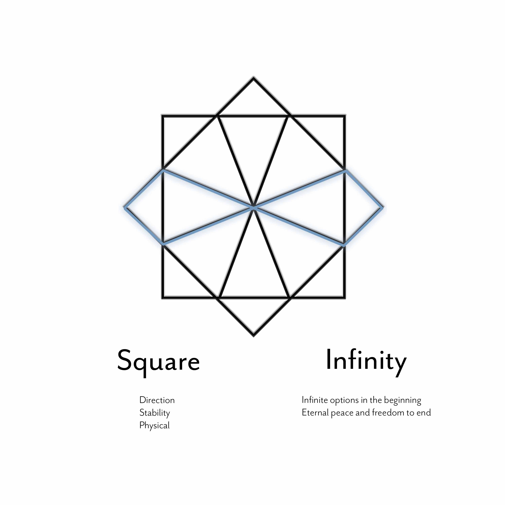

Spring 2019
Imposter
Genesis Lab Game

Imposter is a spy themed card game designed to help students who feel lonely on campus find activities that will introduce them to people and places they might not know about otherwise. Although people at Pepperdine look like they have every minute of their day together, everyone is in the same boat trying to figure out this new experience called college. Imposter stems from looking at people and seeing someone they are not.
How to Play
In order to be inducted into The Agency, people call a phone number hidden on campus and receive their mission packet. Inside the pack there are a variety of cards with challenges, varying in difficulty as people become more involved with the game. Players accrue points by completing the tasks on the card and upload the evidence of their accomplishments to a leaderboard. The top five players get to participate in an experience that caters to their interests. We wanted to shy away from monetary prizes because the end goal of the game was not to get things, but to enjoy and experience everything that Pepperdine, Malibu, and LA have to offer.
Starter Pack
Initiation

Inside the initiation packet, there are nine cards plus the initiation card. These packets are hidden on campus and players are given a clue to find it.
Cards
Assassins

As the name implies, assassin cards allow you to eliminate other players. They do not permanently remove the other player from the game, but they do suspend their points for a week, which takes them out of the running for the weekly prize. However, the points earned during the week they were suspended are added to the next week and can be turned into a strategy.
Explorers

Explorer cards allow you to earn points by completing tasks like geocaching, experiential tasks (eating scary/abnormal food), attending campus rec events, and attending in-game events. These cards are targeted at people who enjoy experiencing new things, but might not know how to find some of the great things Malibu and LA have to offer.
Fabricators


Fabricator cards involve puzzles, decoding, and creating. These are for inventive people who like making, thinking, and learning new skills.
Branding
Logo
Visual Identity Guide: Do

Visual Identity Guide: Do Not


I hope you have enjoyed your tour of Mobius. Right now it is just a concept, but I would love to turn it in to an actual experience one day.